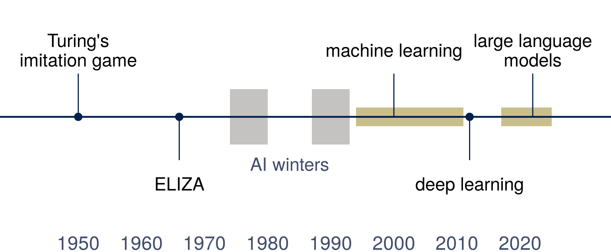
Ethics of AI
Joshua Loftus
What are your top questions about the ethics of AI?
Week 9
Part 1: Historical context (abstract)
Part 2: Benchmarks and “general intelligence”
Part 3: What it is made of
Part 4: Who benefits / cui bono?
Part 5: Reliance, learning and deskilling
Part 6: Conversational AI
Part 7: Environmental costs
Part 1: Historical context (abstract)
A short history
A language model is trained to predict the next word in text people wrote, then tuned using people’s ratings of its answers.
Levels of abstraction
| level | the person writes | filled in by |
|---|---|---|
| machine code | every instruction, as numbers | nothing |
| assembly | every instruction, by name | an assembler |
| Fortran (1957) | formulas and loops | a compiler |
| libraries, scripting | calls to other people’s code | interpreters, libraries |
| a request in English | what is wanted | a language model |
The computer is still executing instructions. An “agent” is a program that runs a model in a loop: someone gave the instructions, and someone answers for them.
A compiler is specified and repeatable. A model is learned and sampled, so it has to be measured.
Part 2: Benchmarks and “general intelligence”
A higher score
Model A scores higher than model B on a benchmark named for reasoning.
What do you need to know before you believe that A reasons better than B?
Reliability and validity
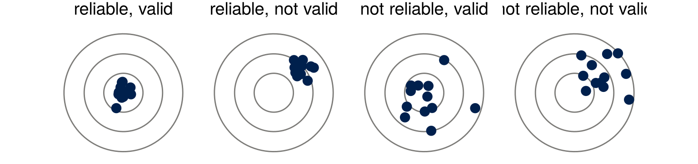
Reliability: the same result when things that should not matter change (run, prompt, judge, items).
Validity: the score measures what it is named for. Construct: does it track “reasoning”? Content: do the items cover what the name claims? Predictive: does it predict performance in use?
Score and capability
\(Y\): the score. \(Y^*\): the capability the benchmark is named for. Of 445 benchmarks for language models (Bean et al., 2025):
| share | |
|---|---|
| define the phenomenon they measure | 78.2% |
| of those definitions, contested | 47.8% |
| give evidence the score measures the intended construct | 53.4% |
| use uncertainty estimates or statistical tests | 16.0% |
On the first row, the review’s own coders agreed 53.7% of the time (kappa 0.073): low inter-rater reliability.
Reading a clock
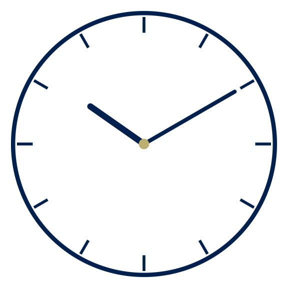
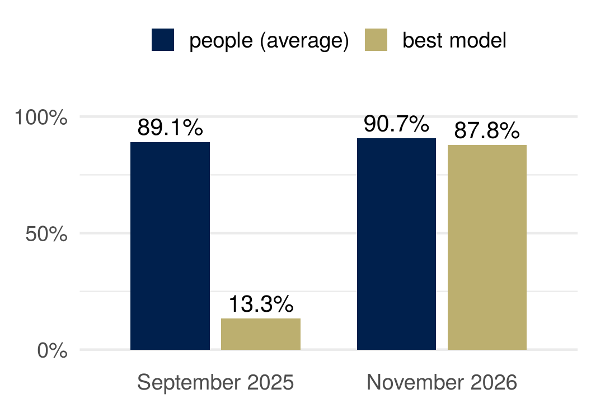
A task that is easy for people, on ClockBench. What changed in a year?
A larger benchmark
A benchmark reports a model’s score with a 95% interval, from the usual formula for a mean over \(n\) items. One prompt, one judge model, one run.
The benchmark grows from 25 items to 400. The interval is four times narrower.
Does the interval now contain the truth more often, less often, or as often as before?
Fixed or random?
\[ \text{score} = \theta + B + \bar\varepsilon, \qquad \mathrm{Var}(\bar\varepsilon) = \frac{\sigma^2}{n}, \qquad \mathrm{Var}(B) = \tau^2 \]
\(B\): the prompt, the judge, the settings. Drawn once, shared by every item.
- Fixed: the target is \(\theta + B\), this model scored this way. The naive standard error \(\sigma / \sqrt n\) is right.
- Random: the target is \(\theta\), over reasonable setups. The variance is \(\sigma^2 / n + \tau^2\).
The naive 95% interval covers \(\theta\) with probability \(2\,\Phi(1.96\, r) - 1\), where \(r = 1 / \sqrt{1 + n\tau^2 / \sigma^2}\).
In survey statistics, \(1 + n\tau^2/\sigma^2\) is the design effect of a single interviewer.
Coverage and the number of items
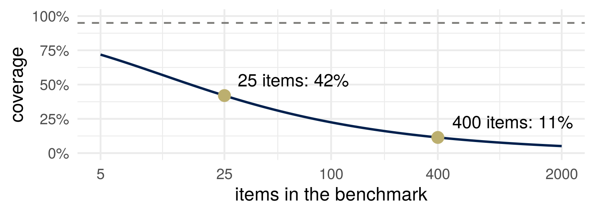
Messing (2026), with variance estimates from a real benchmark: the naive interval contains the truth 42% of the time at 25 items, 11% at 400.
Private versions
On Chatbot Arena, a provider could test private versions and publish one. Meta tested 27 in the month before one release (Singh et al., 2025).
\(K\) private versions, in truth equally good; the best score is published. By how much does it overstate, on average?
The best of \(K\)
Version \(k\) scores \(\mu + \sigma Z_k\), with the \(Z_k\) independent standard normals.
\[ E\Big[\max_k \,(\mu + \sigma Z_k)\Big] = \mu + \sigma\, m_K \]
| \(K\) | 2 | 10 | 27 | 50 |
|---|---|---|---|---|
| \(m_K\) | 0.56 | 1.54 | 2.00 | 2.25 |
Fresh votes on the published version shrink the overstatement: the luck is not in the new votes. The arena’s operators put it at “around +11 Elo after 50 tests and 3000 votes”, falling to zero with fresh votes.
When a measure becomes a target
“When a measure becomes a target, it ceases to be a good measure.” Strathern (1997)
Earlier in the course, a rule added an arrow into the measure: effort on \(Y\). What is that arrow when the measure is a benchmark?
Verifiable domains
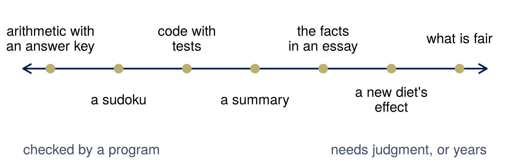
“The ease of training AI to solve a task is proportional to how verifiable the task is.” (Wei, 2025)
Tasks that are cheap to check are cheap to put in a benchmark. Which tasks does “general” then extrapolate to?
Paths into a score
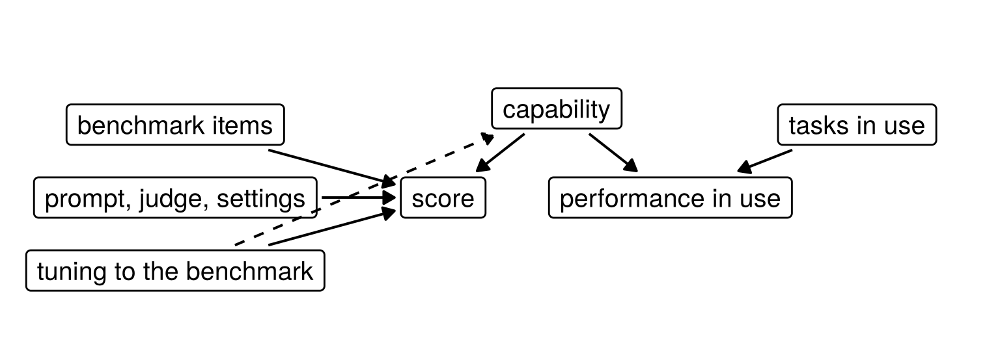
Between two versions, a model’s score rises 20 points. Which paths could carry the rise? Which would also raise performance in use?
Three ways a score misleads
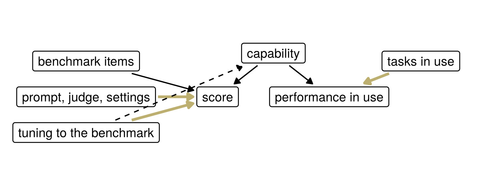
- Prompt, judge, settings → score: one run fixes them. Fixed or random?
- Tuning → score: Goodhart. Fresh, unseen items cut this arrow.
- Tasks in use → performance: the items are not the tasks in use. A shift in distribution.
Part 3: What it is made of
The supply chain

Creating data takes resources. Someone pays to count, to record, and to keep.
Who benefited from this chain being invisible?
Text as a commons
A model is trained on writing that people made public. Each piece is small; the collection is the resource.
Collective frame: one person’s data reveal information about other people (Acemoglu et al., 2022), and individual consent cannot protect that (Viljoen, 2021). What is a group of contributors owed, and who speaks for it?
Individual frame: each author’s consent, credit or payment.
Hours of writing
One open model, Llama 3: about 15 trillion tokens, about 11 trillion words. At 100 to 1,000 finished words per hour of work:
\[ \frac{1.1 \times 10^{13}}{1000} \approx 10^{10} \quad \text{to} \quad \frac{1.1 \times 10^{13}}{100} \approx 10^{11} \text{ hours} \]
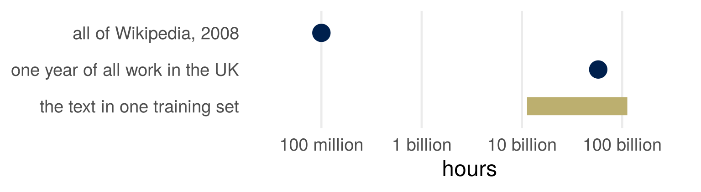
Stack Overflow after ChatGPT
Six months after ChatGPT’s release, posting on Stack Overflow was about 25% lower than comparison forums predict: Russian- and Chinese-language programming forums, where ChatGPT was harder to reach, and mathematics forums (del Rio-Chanona et al., 2024).
The longer view: Stack Overflow is almost dead (Orosz, 2025).
Owed, and to whom
A question for the class this week:
A model was trained on writing that people made public. Is anything owed for it, and to whom?
The individual frame asks, author by author: consent, credit, payment, a way to opt out.
The collective frame asks, for the group: support for the sites that hold the writing, a say in how the collection is used, a share of what is made from it.
Pay for labeling
TIME reported that OpenAI’s contracts paid Sama, an outsourcing firm in Kenya, $12.50 an hour per worker to label graphic text, and that the labelers took home $1.32 to $1.44 an hour (Perrigo, 2023).
Fieldwork at three Sama centers in Kenya and Uganda found low wages, insecure work and tightly disciplined management (Muldoon et al., 2025).
Part 4: Who benefits / cui bono?
Payoff outside the tech sector
No Signs of AI Payoff Outside the Tech Sector (Slok, 2026): revenue per worker and profit margins rising for the “Magnificent 7”, flat for the other 493 firms in the S&P 500.
Nearly 9,000 executives in seven countries, summer 2026 (Yotzov et al., 2026):
- 78% of firms use AI; 2% of firms account for over half the spending;
- essentially no net effect on employment over three years;
- 0.2% a year added to labor productivity growth, 0.6% expected.
If there is a gain, who receives it?
Part 5: Reliance, learning and deskilling
Deskilling
Deskilling: work redesigned so that it needs less skill, or a person’s skill fading because a tool does the task.
With a chatbot, students’ practice grades rose 48%. Predict their exam scores once the chatbot is taken away.
A chatbot in a maths class
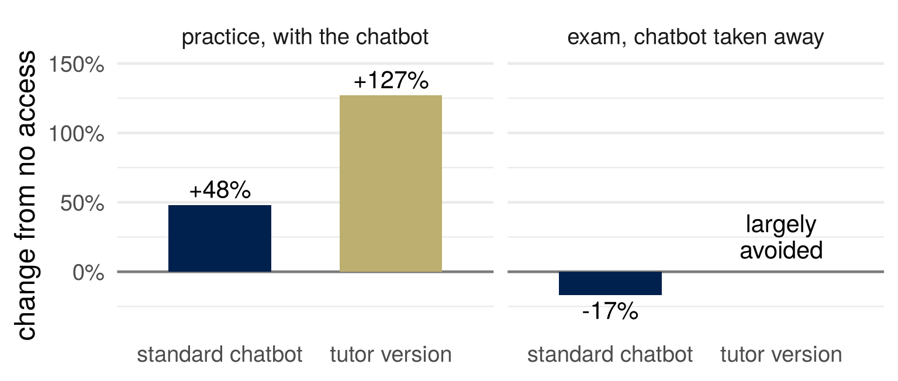
Nearly 1,000 students at a high school in Turkey, against students with no access (Bastani et al., 2025).
Part 6: Conversational AI
Sycophancy
Sycophancy: telling users what they want to hear.
In tests of 11 models, the models affirmed users’ actions far more often than people did. One conversation with a flattering model left people more sure they were right, less willing to repair a conflict, and more trusting of the model (Cheng et al., 2026).
In data used to train assistants, people prefer answers that match their own views (Sharma et al., 2024).
Deepfakes and scams
Deepfake: a synthetic image, audio or video of a real person doing or saying something they did not.
Of nearly 15 million Twitter profile pictures, 0.052% were AI-generated faces. Many of those accounts were created in bulk; many posted about giveaways and cryptocurrency (Ricker et al., 2024).
125 Facebook Pages posting AI-generated images, some of them scams. At times the feed showed the images to users who did not follow the Pages and did not realize they were generated (DiResta and Goldstein, 2024).
AI in the 2026 midterms
Over $187 million on 289 AI-generated or AI-enhanced political ads, to 29 October (Wesleyan Media Project):
Republican sponsors also accounted for just over 90% of the spending. By early October, 31% of the tracked ads disclosed the use of AI.
The researchers: “almost surely lower than the actual level”, since many ads carry no disclaimer.
Part 7: Environmental costs
In aggregate
Data centers’ share of the world’s electricity (IEA, 2025):
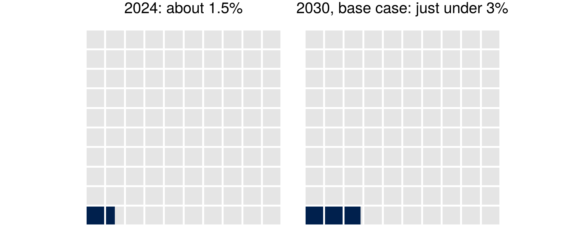
About a tenth of the growth in demand to 2030: less than industrial motors or air conditioning.
Locally
xAI’s Colossus 2 data center in Memphis is powered by a gas plant over the state line in Southaven, Mississippi.
The NAACP alleges (April 2026) that 27 turbines, then 33, ran without air permits, with the potential to emit over 1,700 tons of nitrogen oxides a year, likely the largest industrial source of them in the Memphis area.
xAI argued the turbines were exempt. In October 2026 the court denied its motion to dismiss.
A report with a signature
A report with errors
In 2025 Deloitte Australia delivered a 237-page report to a government department, for A$440,000. It contained a fabricated quotation from a court judgment and references to research that does not exist. Deloitte agreed to repay the final installment; the revised report disclosed that a language model had been used.
The tool executed instructions. People wrote the request, accepted the output and put the firm’s name on it.
You sign the report
You are an analyst. A tool chose the data cleaning steps and the model for an analysis, and wrote the first draft of the report. Your name goes on it.
Alone, in writing. What do you owe the reader before you sign? What would you check, what would you disclose, and why?
Lenses this week
- Goal selection. What are we optimizing or predicting? A benchmark’s name, and the score that gets tuned.
- Data selection. Who is in the data? Whose writing, whose labeling; which tasks get into benchmarks.
- Honest reporting. Which comparison gets reported? Fixed or random; the best of \(K\); disclosing AI.
- Justice. Who bears the error? Labelers; a gas plant’s neighbors.
- Ownership. You have to choose, so choose, and defend it. You sign the report.
- Leverage. What can be changed, and how? More setups, not more items; fresh items.
References
Acemoglu, Makhdoumi, Malekian, et al. (2022), “Too much data: Prices and inefficiencies in data markets,” American Economic Journal: Microeconomics 14(4), 218–256, https://doi.org/10.1257/mic.20200200.
Arena Team (2025), “Our Response to ‘The Leaderboard Illusion’ Writeup,” 9 May 2025, updated 13 June 2025, https://arena.ai/blog/our-response.
Bastani, Bastani, Sungu, et al. (2025), “Generative AI without guardrails can harm learning: Evidence from high school mathematics,” PNAS 122(26), e2422633122, https://doi.org/10.1073/pnas.2422633122.
Bean, Kearns, Romanou, et al. (2025), “Measuring what matters: Construct validity in large language model benchmarks,” NeurIPS 2025 Datasets and Benchmarks Track, https://arxiv.org/abs/2511.04703.
Cheng, Lee, Khadpe, et al. (2026), “Sycophantic AI decreases prosocial intentions and promotes dependence,” Science 391(6792), eaec8352, https://doi.org/10.1126/science.aec8352.
Crawford (2021), Atlas of AI, Yale University Press. Crawford and Joler (2018), “Anatomy of an AI System,” AI Now Institute and Share Lab, https://anatomyof.ai.
del Rio-Chanona, Laurentsyeva and Wachs (2024), “Large language models reduce public knowledge sharing on online Q&A platforms,” PNAS Nexus 3(9), pgae400, https://doi.org/10.1093/pnasnexus/pgae400.
DiResta and Goldstein (2024), “How spammers and scammers leverage AI-generated images on Facebook for audience growth,” Harvard Kennedy School Misinformation Review 5(4), https://doi.org/10.37016/mr-2020-151.
Dubey et al. (2024), “The Llama 3 Herd of Models,” https://arxiv.org/abs/2407.21783.
Gray and Suri (2019), Ghost Work, Houghton Mifflin Harcourt.
International Energy Agency (2025), Energy and AI, IEA, Paris, https://www.iea.org/reports/energy-and-ai.
McGuirk (2025), “Deloitte to partially refund Australian government for report with apparent AI-generated errors,” Associated Press, 7 October 2025.
Messing (2026), “Hidden Measurement Error in LLM Pipelines Distorts Annotation, Evaluation, and Benchmarking,” preprint, https://arxiv.org/abs/2604.11581; and “Hidden error in LLM pipelines leads to benchmark hacking and undercoverage,” 17 November 2026, https://solomonmg.github.io/blog/hidden-measurement-error-llm-evals/.
Muldoon, Cant, Graham, et al. (2025), “The poverty of ethical AI: Impact sourcing and AI supply chains,” AI & Society 40(2), 529–543, https://doi.org/10.1007/s00146-023-01824-9.
NAACP, complaint against xAI and MZX Tech, No. 3:26-cv-00074 (N.D. Miss.), filed 14 April 2026, https://earthjustice.org/document/naacp-sues-xai-for-clean-air-act-violations-complaint. Earthjustice (2026), “NAACP Asks Court for Emergency Action to Stop Illegal Air Pollution from xAI’s Data Center Power Plant,” https://earthjustice.org/press/2026/naacp-asks-court-for-emergency-action-to-stop-illegal-air-pollution-from-xais-data-center-power-plant; “Court Denies xAI’s Motion to Dismiss,” 30 October 2026, https://www.earthjustice.org/press/2026/court-denies-xais-motion-to-dismiss-air-pollution-lawsuit-against-elon-musks-company.
Office for National Statistics (2026), Employment in the UK: August 2026, total actual weekly hours worked, https://www.ons.gov.uk/employmentandlabourmarket/peopleinwork/employmentandemployeetypes/bulletins/employmentintheuk/august2026.
Orosz (2025), “Stack Overflow is almost dead,” The Pragmatic Engineer, 15 May 2025, https://blog.pragmaticengineer.com/stack-overflow-is-almost-dead/.
Perrigo (2023), “Exclusive: OpenAI used Kenyan workers on less than $2 per hour to make ChatGPT less toxic,” TIME, 18 January 2023, https://time.com/6247678/openai-chatgpt-kenya-workers/.
Ricker, Assenmacher, Holz, Fischer and Quiring (2024), “AI-Generated Faces in the Real World: A Large-Scale Case Study of Twitter Profile Images,” RAID 2024, https://arxiv.org/abs/2404.14244.
Safar (2025), “ClockBench,” 2 September 2025, https://clockbench.ai/ClockBench.pdf; leaderboard as listed in November 2026, https://clockbench.ai/.
Sharma, Tong, Korbak, et al. (2024), “Towards understanding sycophancy in language models,” ICLR 2024, https://arxiv.org/abs/2310.13548.
Shirky (2012), “Gin, Television, and Social Surplus,” chapter 16 in Mandiberg (ed.), The Social Media Reader, New York University Press, from p. 236; a talk of 2008.
Singh, Nan, Wang, et al. (2025), “The leaderboard illusion,” NeurIPS 2025, https://arxiv.org/abs/2504.20879.
Slok (2026), “No Signs of AI Payoff Outside the Tech Sector,” The Daily Spark, Apollo, 24 October 2026.
Strathern (1997), “‘Improving ratings’: audit in the British University system,” European Review 5(3), 305–321, p. 308.
Viljoen (2021), “A relational theory of data governance,” Yale Law Journal 131(2), 573–654.
Wei (2025), “Asymmetry of verification and verifier’s law,” 15 July 2025, https://www.jasonwei.net/blog/asymmetry-of-verification-and-verifiers-law.
Wesleyan Media Project (2026), release of 29 October 2026, https://mediaproject.wesleyan.edu/releases-102926/; and researchers of the Wesleyan Media Project, “We’ve tracked $80M of spending on almost 170 AI-generated political ads this year,” The Conversation, republished by Salon, 6 October 2026, https://www.salon.com/2026/10/06/weve-tracked-80m-of-spending-on-almost-170-ai-generated-political-ads-this-year-its-weird-partner/.
Yotzov, Barrero, Bloom, et al. (2026), “Firm Data on AI,” NBER Working Paper 34836, https://doi.org/10.3386/w34836.